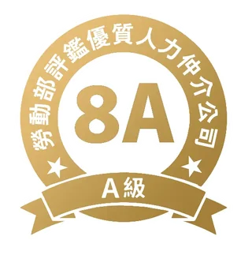
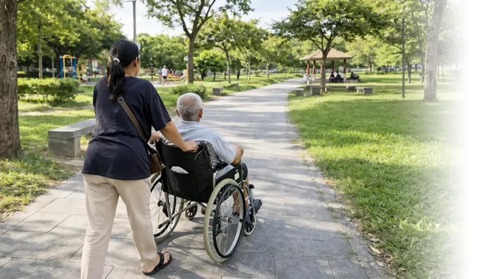
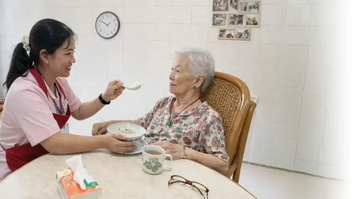
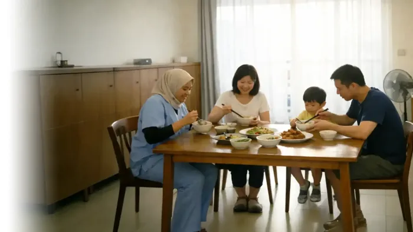
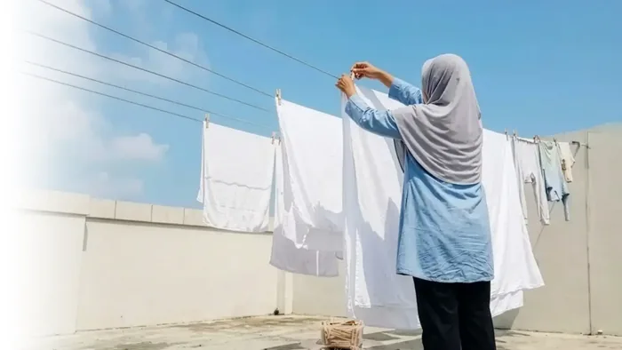

工作與照顧兩頭燒、手足之間開始有心結 —— 這是幾乎每個家庭都會走到的一步。 世華在台中做了 31 年，幫你把這件事辦成。

以聘僱印尼看護計算，雇主到職後每個月要付的固定支出（不含第一次聘僱的仲介費用）。2026 年最新數字。
除了每月支出，聘僱時另有一筆一次性仲介服務費，由雇主在簽約時支付。
想了解詳細試算，可參考世華整理之 外籍看護薪資計算方式。 費用會因國籍、班別與政策調整而異，實際金額以簽約內容為準 —— 全程免費諮詢，有任何疑問都會逐項說明清楚。
符合以下任一項即可申請，不是只有巴氏量表這條路。
點選符合的項目，看看你家符不符合申請資格
0 項符合——你符合申請資格！全程免費諮詢，Lucky姐團隊幫你確認細節。
申請條件以主管機關勞動部最新公告為準，多元認定細節可洽 衛生福利部或各地長期照顧管理中心。 延伸閱讀：80歲以上免評估申請全攻略、失智症申請完整指南。 不確定自己符不符合？全程免費諮詢，Lucky姐團隊 31 年經驗，一通電話幫你判斷。
同業都說「服務好」。我們把它寫成可以驗收的四個條件。
合法承接在台移工，人力不空窗，不必從國外重新等。
法令只要求 40 天，世華給你 180 天。
緊急狀況接電話的是真人，不是翻譯 App。溝通誤解，往往就是出事的開始。
拒絕加盟、不接受蓋牌業務員，每位專員都在世華體系內培養。
不確定也沒關係，打來我們幫你判斷。
不是抽象的「照護服務」。這是世華媒合的看護，一天裡真正在做的事。



不是接線中心，是真的懂法規、跑過現場的人。
民國 84 年成立至今，累積服務 3,000+ 家庭。什麼樣的案件會卡在資格審核、什麼情況下才符合更換條件。
團隊持有就業服務專業證照。移工照護訓練與雇主法規說明會，都是自己人上課，不外包。
民國 84 年創立，私立就業服務機構許可證號 0471。團隊持有 3 張就業服務專業人員證書。
點擊任一張可放大檢視
「珍惜所託，如同親用」
0939-131-439Lucky姐團隊・全程免費諮詢